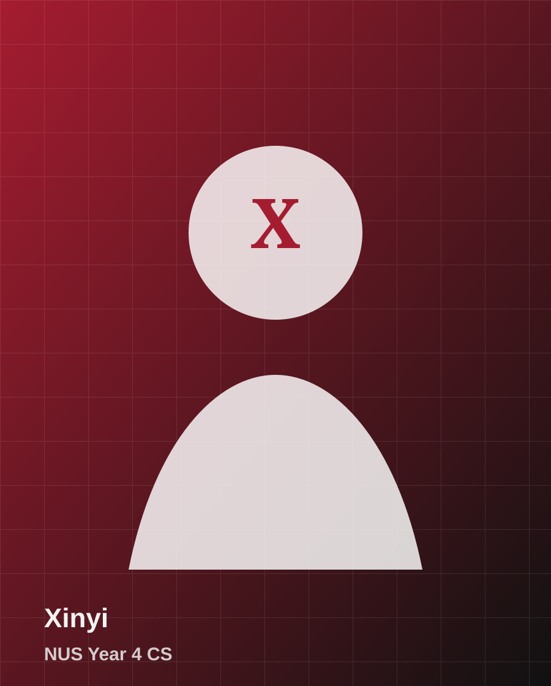
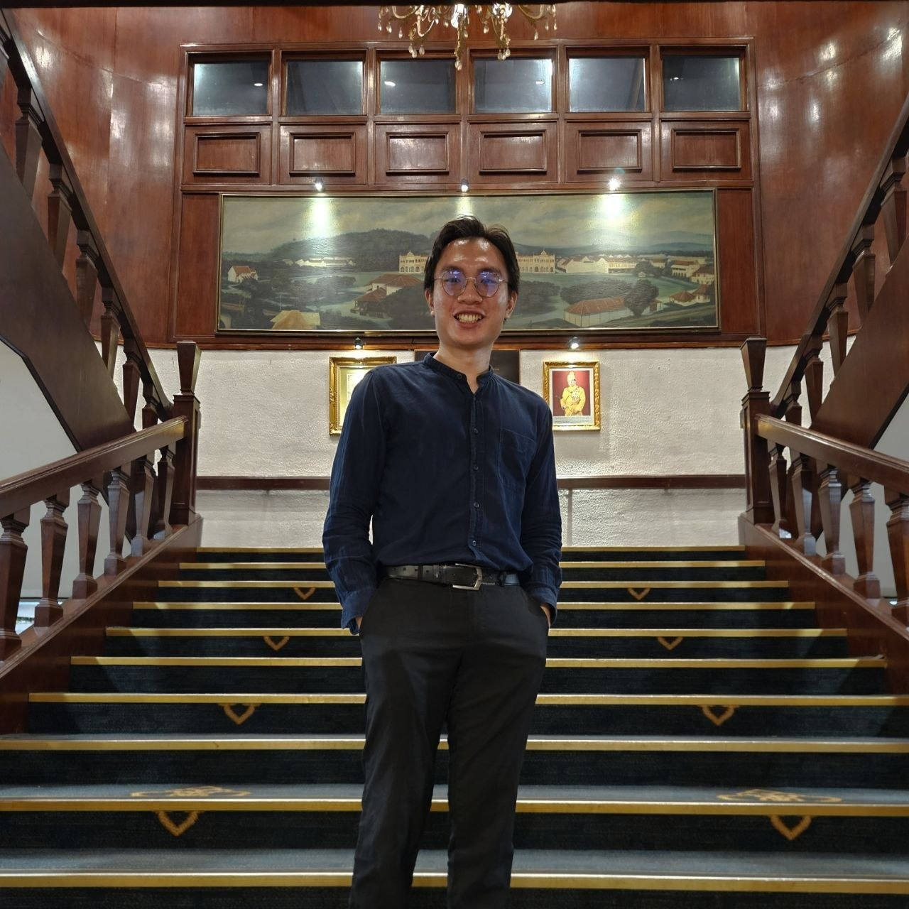
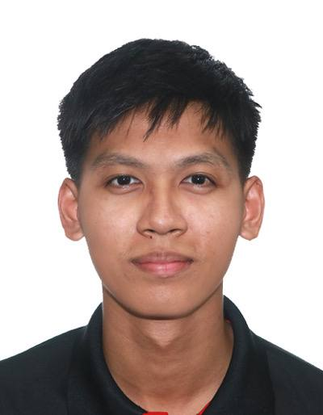

Xinyi
NUS Year 4 CS
About the team
A five-person computer science team building a civic accessibility demo for Huawei Tech4City, combining geospatial interfaces, street-view evidence, and persona-aware mobility scoring.

NUS Year 4 CS

NUS Year 4 CS

SMU Year 1 CS
SMU Year 2 CS

SIM Year 2 CS